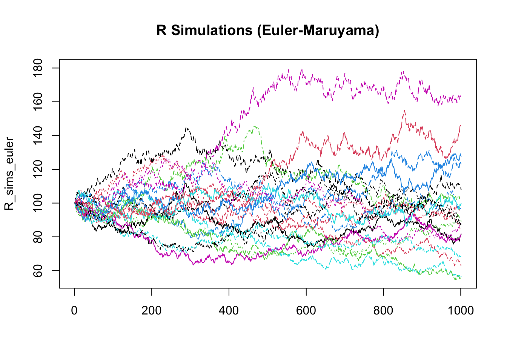
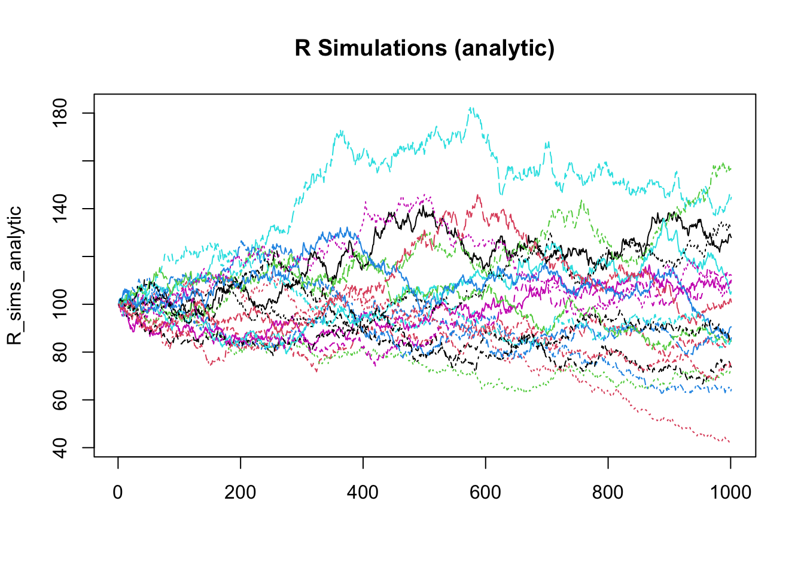
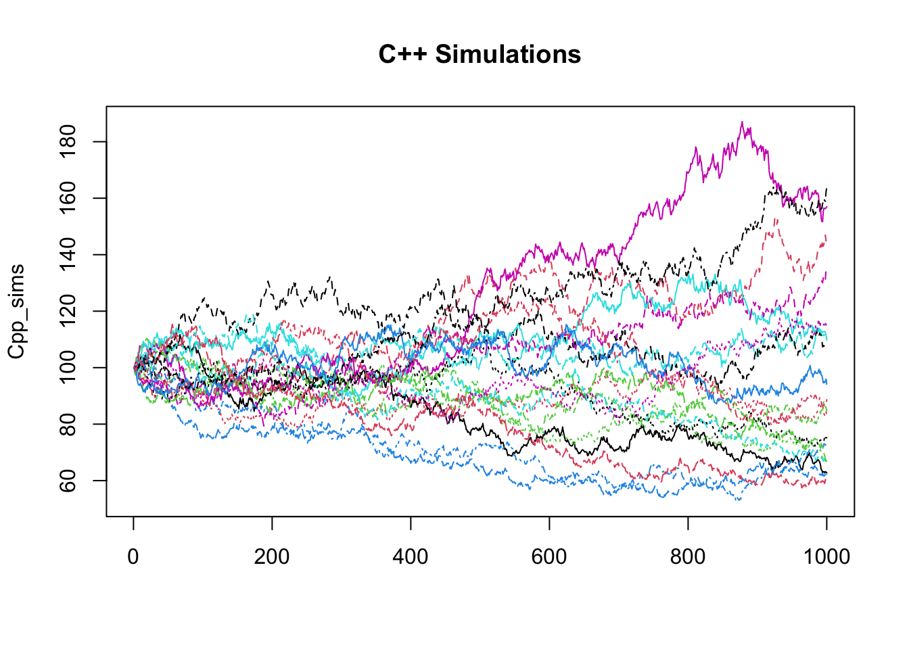

R Euler-Maruyama discretization:Since there is a closed-form solution (below) for the GBM stochastic differential equation, this scheme is not necessary, but a nice illustration nevertheless.
For an Ito process, \(X=(X)_{t>t_0}\), that satisfies the SDE:
\[ X_t = x + \int_{t_0}^t\mu(s,X_s)ds + \int_{t_0}^t\sigma(s,X_s)dW_s \]
\[ dX_t = \mu(t,X_t)dt + \sigma(t,X_t)dW_t \]
The Euler-Maruyama discretisation can be implemented recursively as:
\[ X_{t_{n+1}} = X_{t_n} + \mu(t,X_{t_n})\Delta t + \sigma(t_n,X_{t_n})\epsilon_n \qquad \epsilon \sim N(0,\Delta t) \]
GBM_Euler <- function(S0 = 1, r, v, t, N = 365) {
dt <- t / N
time <- seq(from = 0, to = t, by = dt)
Z <- rnorm(n = N, mean = 0, sd = 1)
dW <- sqrt(dt) * Z
W <- c(0, cumsum(dW))
St <- c(S0, numeric(N))
for (i in 2:length(St)) {
St[i] <- St[i-1] + r * St[i-1] * dt + v * St[i-1] * dW[i-1]
}
return( St )
}C++ Closed-Form Simulation:
// Header files and namespaces -------------------------------------------------
#include <Rcpp.h>
#include <math.h>
#include <numeric>
#include <random>
#include <vector>
#include <functional>
using namespace Rcpp;
// Non-exported functions ------------------------------------------------------
std::vector<double> linspace(double a, double b, int num) {
std::vector<double> v(num);
for (int i = 0; i < num; i++) { v[i] = a + i * ( (b - a) / num ); }
return v;
}
std::vector<double> cumulative_sum(std::vector<double> x){
std::vector<double> v(x.size());
std::partial_sum(x.begin(), x.end(), v.begin(), std::plus<double>());
return v;
}
std::vector<double> standard_normal(int n) {
// random device class instance, source of 'true' randomness for initializing random seed
std::random_device rd;
// Mersenne twister PRNG, initialized with seed from previous random device instance
std::mt19937 gen(rd());
float sample;
std::vector<double> v(n);
for(int i = 0; i < n; i++) {
// instance of class std::normal_distribution with specific mean and stddev
std::normal_distribution<float> d(0, 1);
// get random number with normal distribution using gen as random source
sample = d(gen);
// add to vector
v[i] = sample;
}
return v;
}
// Exported functions ----------------------------------------------------------
// [[Rcpp::export]]
std::vector<double> GBM_Cpp(
double tau, // time to expiry
double r, // risk free rate
double sigma, // volatility
double S0, // initial stock price
int N // number of steps between 0 and T
) {
// length of each time step
double dt = tau / N;
// Vector for GBM paths
std::vector<double> St(N+1);
St[0] = S0;
// fill(St.begin(), St.end(), S0);
// vector of time points
std::vector<double> time = linspace(0.0, tau, N);
// standard normal sample of N elements
std::vector<double> Z = standard_normal(N);
// Brownian motion increments
std::vector<double> dW(Z.size());
for (int i = 0; i < (int)Z.size(); i++) {
dW[i] = Z[i] * std::sqrt(dt);
}
// Brownian motion at each time (N+1 elements)
std::vector<double> W{0};
std::vector<double> cumsum_dW = cumulative_sum(dW);
W.insert(W.end(), cumsum_dW.begin(), cumsum_dW.end());
for (int i = 1; i < (int)St.size(); i++) {
St[i] = S0 * exp((r - sigma * sigma / 2) * time[i] + sigma * W[i]);
}
St.pop_back();
return( St );
}
// END OF FILE.Rcpp::sourceCpp(file = "GBM.cpp")R Closed-Form Simulation:GBM_R <- function(
# FUNCTION ARGUMENTS
S0, # initial stock value
t, # time to expiry
r, # risk-free rate
v, # volatility
N = 1000 # number of steps
) {
dt = t / N # length of each step
time = seq(0, t, dt) # vector of time points
Z <- rnorm(N) # standard normal sample of N elements
dW <- Z * sqrt(dt) # Brownian motion increments
W <- c(0, cumsum(dW)) # Brownian motion at each time (N+1 elements)
St <- c(S0, numeric(N)) # vector of zeros, N+1 elements
St <- S0 * exp((r - v^2 / 2) * time + v * W)
return( St )
}R_sims_euler <- replicate(
n = 20,
GBM_Euler(t = 1, r = 0.05, v = 0.3, S0 = 100, N = 1000)
)
R_sims_analytic <- replicate(
n = 20,
GBM_R(t = 1, r = 0.05, v = 0.3, S0 = 100, N = 1000)
)
Cpp_sims <- replicate(
n = 20,
GBM_Cpp(tau = 1, r = 0.05, sigma = 0.3, S0 = 100, N = 1000)
)
matplot(R_sims_euler, type = "l", main="R Simulations (Euler-Maruyama)")
matplot(R_sims_analytic, type = "l", main="R Simulations (analytic)")
matplot(Cpp_sims, type = "l", main="C++ Simulations")
microbenchmark::microbenchmark(
GBM_R = GBM_R(t = 1, r = 0.05, v = 0.2, S0 = 100, N = 365),
GBM_Cpp = GBM_Cpp(tau = 1, r = 0.05, sigma = 0.2, S0 = 100, N = 365),
times = 10000
)## Unit: microseconds
## expr min lq mean median uq max neval
## GBM_R 55.509 59.655 77.90283 62.8380 72.7610 12091.860 10000
## GBM_Cpp 42.362 45.107 53.20820 48.6855 53.8645 561.379 10000